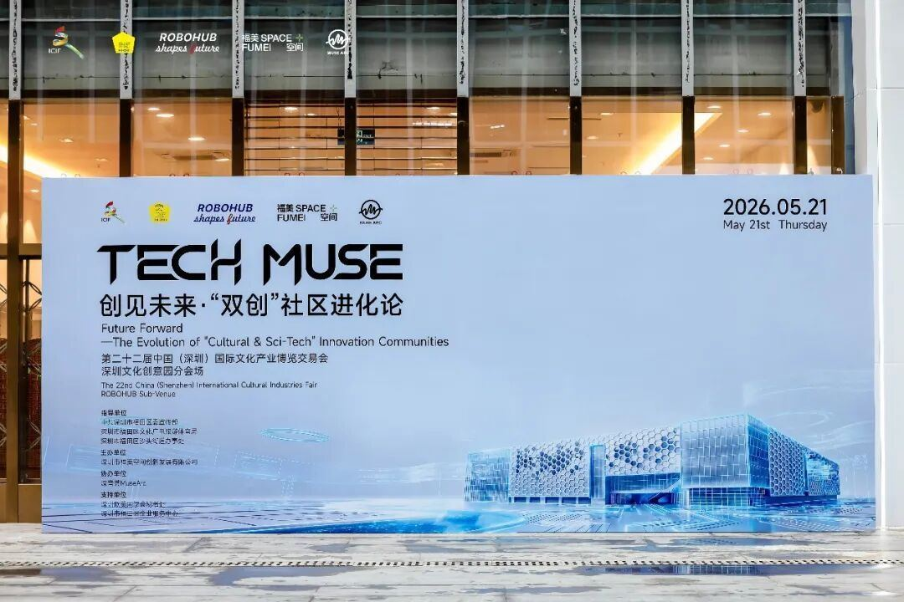
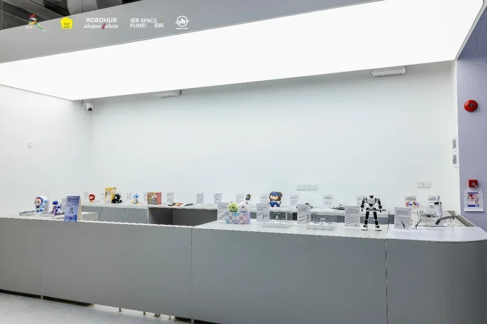
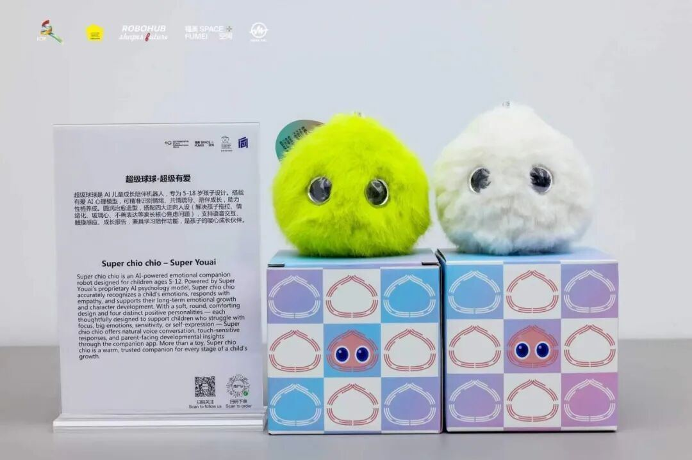
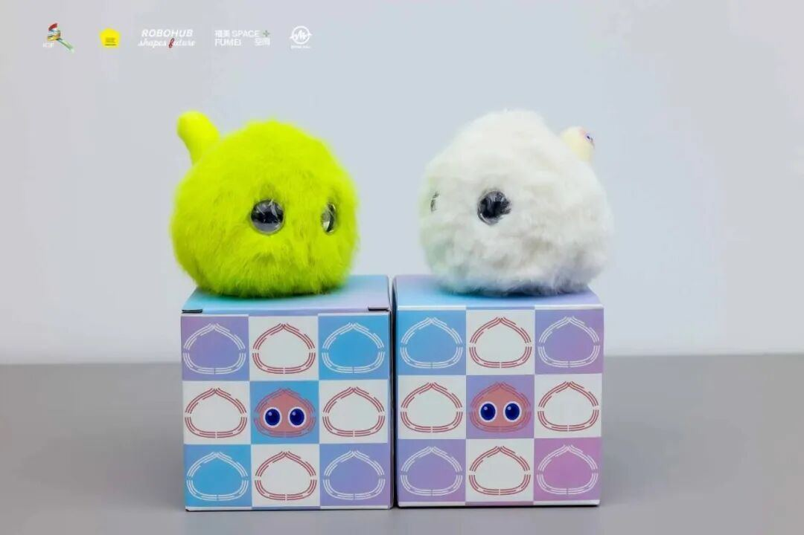
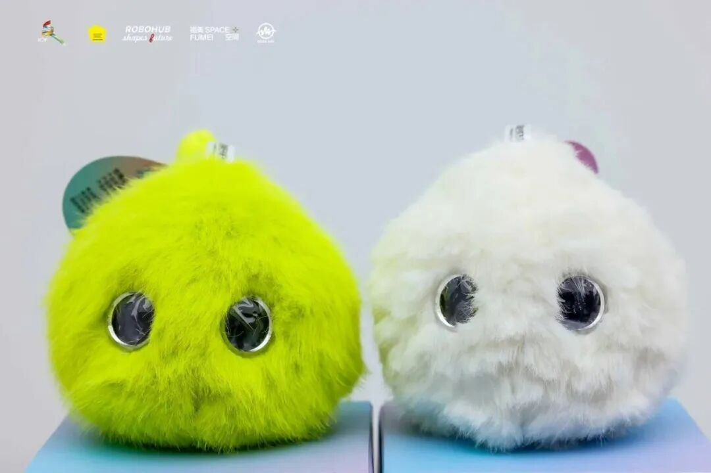
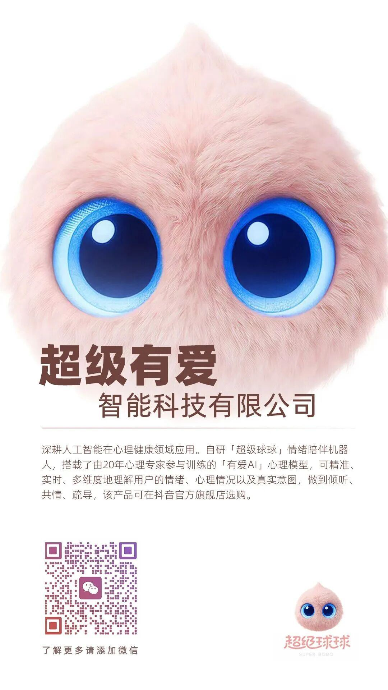

⼀场关于未来的对话，从⼀只软乎乎的球球开始2026年5⽉21⽇，由ROBOHUB主办的「TECH MUSE 创⻅未来·“双创” 社区进化论」主题活动在深圳⽂化创意园启幕。在充满未来感的展厅⾥，有⼀抹鲜亮的绿和⼀团柔软的⽩，吸引了所有⽬光。
它们是，超级球球！这只软萌的 AI ⼉童成⻓陪伴机器⼈，带着它对孩⼦情绪的深度理解，第⼀次⾛进了这场关于未来的盛会。

它不只是玩具，更是懂孩⼦的 “情绪树洞”很多时候，孩⼦的⼩情绪像⼀颗未被理解的种⼦，需要被看⻅、被倾听。超级球球，就是为此⽽⽣的，专为 5-12 岁孩⼦设计，搭载⾃研的有爱 AI ⼼理模型，它能精准识别孩⼦的情绪，像⼀个温柔的树洞，陪伴他们疏解情绪、表达⾃我。

软乎乎的仿⽣⽑绒触感，搭配灵动的星空眼眸，每⼀次触碰，它都会⽤温柔的⽅式回应。
当孩⼦的世界⾥，多了⼀个永远耐⼼、永远正向的伙伴，成⻓的烦恼，也有了出⼝。

科技的终极浪漫，是⽤温柔回应成⻓在⽂博会的现场，我们看到了很多关于未来的想象。⽽超级球球，让我们看到了科技的另⼀种可能：它不必总是冰冷的、⾼效的，它也可以是温暖的、柔软的，能真正⾛进⼀个孩⼦的⼼⾥。
⽂化的传承，科技的创新，最终都要回归到 “⼈” 本⾝。
我们希望，超级球球能成为每⼀个孩⼦成⻓路上的伙伴，⽤科技的⼒量，守护他们的情绪，滋养他们的⼼灵，让每⼀份⼩⼩的个性，都能被温柔以待。

